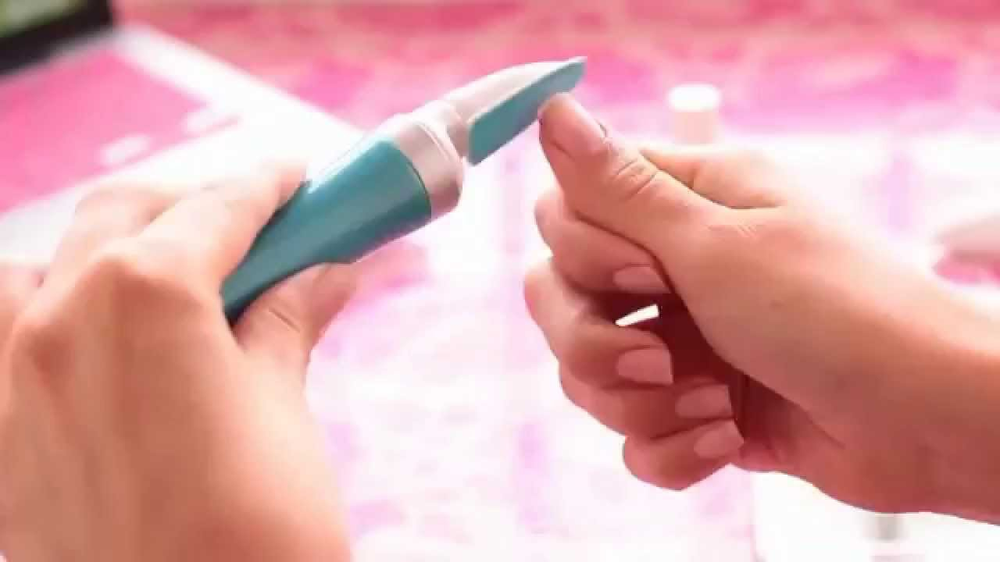

Удивительно, но даже такая, казалось бы, повседневная процедура, как маникюр, имеет свою историю. Мода на маникюр стала развиваться еще в глубокой древности.
Еще в Древнем Египте и Китае 3000 лет назад знали толк в маникюре. В Древнем Египте различные цвета красок для ногтей использовались в качестве "сословного кода". Яркие насыщенные тона указывали на принадлежность к царской семье, указывали на высокое общественно положение, рабы могли окрашивать ногти только в бледные пастельные тона. Клеопатра окрашивала свои длинные ногти в терракотовый цвет обыкновенной хной.
В древних культурах считалось, что длинные ногти символизируют мудрость и помогают общаться с божествами, поэтому ногти допускалось растить и красить не только женщинам. Однако к мужчинам выдвигался ряд особых требований. Одно из них – непременная принадлежность к знати. На Руси с ногтями связано множество суеверий. Например, старожилы некоторых деревенек и по сей день всерьез убеждены и пытаются убедить других в том, что стричь ногти следует не иначе как в четверг.
Готовили краску для ногтей, например, в древнем Китае из воска, яичных белков, желатина и гуммиарабика. 600 лет назад китаянки предпочитали красить ногти золотой или серебряной краской. Во времена династии Мин красили ногти уже черной или красной, а еще позднее стали надевать на пальцы золотые или серебряные наконечники в форме длинных ногтей. Первый цветной лак, который появился только в 1932 году в США, положил начало бурному развитию этой индустрии красоты в мире. Само слово маникюр произошло от латинского "manus", что значит кисть и "cure" - уход, т.е. означает гигиеническую обработку с целью предупреждения и профилактики заболеваний, связанных с кожей рук и ногтями и придание рукам, а соответственно и ногтям, красивого и ухоженного вида.
Прежде всего, необходимо приобрести инструменты для маникюра.
Их можно приобретать по отдельности, а можно - комплектом в красивом футляре. Важно, чтобы в нем были: кусачки или маленькие ножницы для ногтей и для кожи, лопаточки и деревянные или костяные палочки для обработки кутикулы, пилочки различной зернистости.
Лак для ногтей
Лак лучше выбирать не на ацетоновой основе (мы говорили об ацетоне). Кроме цветных лаков нам необходимы лаки-основы, или крепители ногтей и, конечно, закрепители лака - фиксаторы. Сегодня многие косметические компании выпускают лаки, содержащие в своем составе укрепители ногтей. А применение фиксатора продлит жизнь лака.
Хороший лак не высыхает через пол года, но и он имеет свой срок годности. Сделать лак более жидким можно с помощью растворителей, но это можно сделать, когда лак немного загустел, а не высох совсем. Нельзя ждать чудес от растворителей - через два, три применения лак все равно придет в негодность, появятся комочки, пузырьки, будет наносится не равномерно.
Пилочки
Применяются они как для шлифовки и полировки, так и для придания формы ногтям. Поэтому имеют различную зернистость.

Крупнозернистые пилочки с грубой поверхностью используются для обработки искусственных ногтей. Для обработки своих настоящих ногтей пользоваться железными инструментами нежелательно. Лучше использовать пилки на прорезиненной или картонной основе. Но если вы привыкли к металлическим пилкам, то лучше взять мелкозернистые пилочки полукруглой формы.
Пилочки бывают: алмазные, рубиновые, керамические, сапфировые - более зернисты, подходят для твердых ногтей. А для нежных и тонких - пилочка из наждачной бумаги. Лучше всего пользоваться керамической пилкой двух (трех) сторонней. С одной стороны для первичной спилки ногтя и придания ему нужной формы, а более мелкая для зашлифовки краёв
Для укорачивания ногтей используют более крупные пилки, а для придания формы – более мелкие. Важно напомнить, что подпиливать можно только сухие ногти, и движения пилкой должны быть направлены обязательно в одну сторону: от края к центру или по прямой. Это призвано предотвратить расслоение ногтей.
Блеск ногтям придают с помощью специальных пилочек-полировщиков. Часто их продают в комплекте, пронумерованными по этапам полировки. Пилочку с грубым напылением для шлифовки используют очень осторожно и всего в двух случаях:
- если ногтевая пластинка в продольных или поперечных бороздках;
- если после применения некачественного лака на ногте остались пигментные изменения.
Но злоупотреблять этой процедурой не стоит. Можно отшлифовать ноготь раз в полгода, когда полностью поменяется ногтевая пластина. Иначе, она истончится.